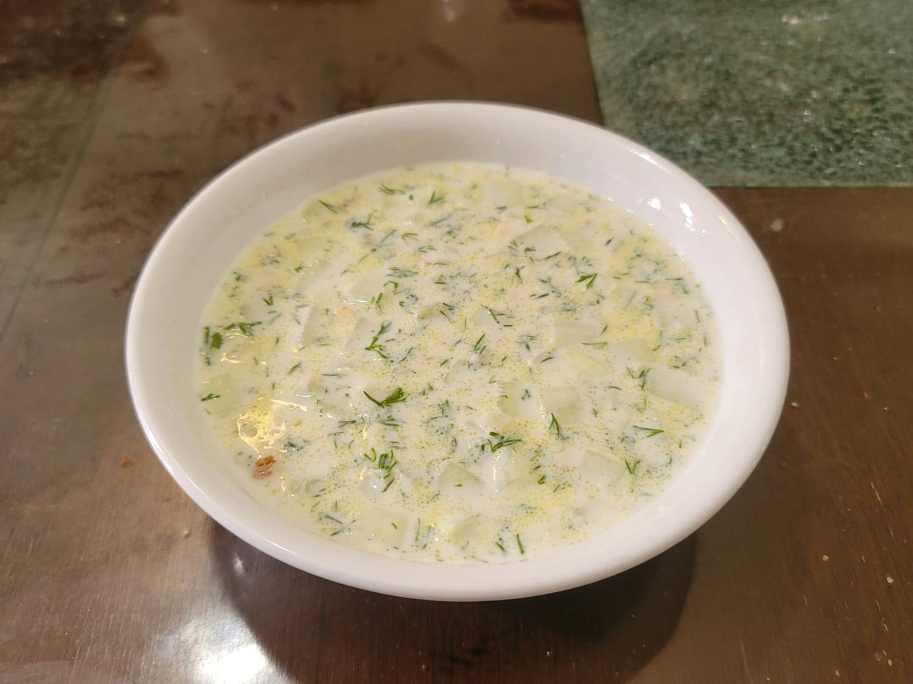

Tarator

Ingredients:
- 2 cups Bulgarian yogurt or Greek yogurt
- 1-2 English cucumbers, peeled and diced
- 1 1/2 cup Water
- 2-3 cloves Garlic, minced or grated
- 1/2 bunch Dill, chopped
- 20 g Walnuts, finely chopped
- 1 tbsp Olive oil or Sunflower oil
- Salt, to taste
- Black pepper, to taste
Instructions:
- In a large bowl, whisk together the yogurt and water until smooth. Then add in the rest of the ingredients and stir to combine. Season with salt and pepper to taste.
- Place into the fridge to chill for at least 2 hours. Serve cold.